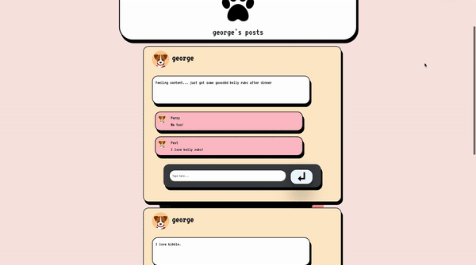

PROJECTS
Petstagram
> DESCRIPTION: This app was developed and implemented by 5 members for UCLA's CS 97 course. It's a social media for your pets to write posts, see their friends, and comment on other pet's posts.
> TECHNOLOGIES USED: React, Javascript, Node.js, Firebase
> DATE: January 2021 - March 2021
> Website demonstration.
Titanic Panic
> DESCRIPTION: This game was developed and implemented by 4 members. It makes use of JavaScript's tiny graphics library and provides a fun yet challenging game for players!
> TECHNOLOGIES USED: JavaScript
> DATE: October 2020 - December 2020
> Game demonstration, played using the arrow keys.

Movement of an Object in a Microgravity Environment Summary
> DESCRIPTION: This project was researched and written by 3 College of San Mateo students. We were given a week to determine the range of dimensions for the smallest possible asteroid which can be used to land a probe and develop a method to land the probe on the asteroid. Additionally, we had to develop a way to move the probe using a spring. The entire description of the problem (Problem B) as well as additional issues, which were to be answered in an hour and a half, can be seen at the link below.
LINK TO SCUDEM 2019 PROBLEMS AND ADDITONAL ISSUES
> DATE: October 2019
>Presentation Slides for Project Presentation
This website! (GITHUB)
> DESCRIPTION: I created this website to show my accomplishments and allow viewers to get to know me!
> TECHNOLOGIES USED: HTML/CSS
DATE: April 2021